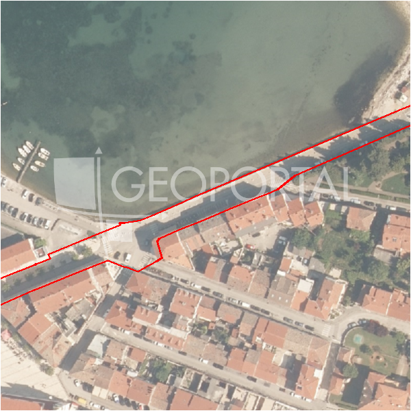

#41876 · Poreč, okolica, prostrano zemljište za gradnju stanova
Poreč, Poreč, Istarska · zemljiste · njuskalo · status active · oglas ↗
Ocjena
- Score
- 63 rule 63 · LLM – · 12.09.2026.
- RLV
- 2,34 M€ (673 €/m²) · ratio 6,09
- Ukupna investicija
- 6,83 M€
- GBP
- 2.507 m²
- Feedback
- –
- CRM
- –
Oglas
- Cijena
- 385.000 € (125 €/m²)
- Površina
- 3.077 m² · DKP 3.482 m² (odstupanje 13,2 %)
- Prodavatelj
- agencija · DIAMOND REAL ESTATE d.o.o.
- Prvi put
- 11.09.2026. · zadnje 11.09.2026. · 0 d na tržištu
Povijest cijene
| Datum | Cijena |
|---|---|
| 11.09.2026. | 385.000 € |
Flagovi
natura_uz_gradnju Natura/zaštićeno područje uz građevinsku zonu — posebni uvjeti (−5)zop_70_100 ZOP pojas 70/100 m (−10)
zone_uncertainty zona nije pregledana (reviewed: false) (−5)
parcelacija fazni projekt / parcelacija
llm_pending LLM ekstrakcija/ocjena nedostupna
Komponente score-a
| rlv | {'gbp': 2507.1984, 'kis': 0.8, 'nkp': 1880.3988000000002, 'noi': None, 'rlv': 2343412.9393043476, 'ratio': 6.086786855335967, 'value': None, 'phases': 2, 'profile': 'obala_visestambeno', 'gdv_neto': 10530233.280000001, 'cost_soft': 501439.6800000001, 'gdv_bruto': 13162791.600000001, 'kis_known': False, 'total_inv': 6826527.904000001, 'cost_build': 5014396.800000001, 'cost_other': 902591.4240000001, 'cost_sales': 394883.748, 'demolition': False, 'gbp_source': 'kis', 'rlv_per_m2': 672.9652173913043, 'parcel_area': 3482.22, 'parcelation': True, 'roi_on_cost': 0.4847005204594854, 'profit_at_ask': 3308821.6280000005, 'cost_demolition': 0.0, 'total_inv_phase': 3617313.9520000005, 'parcel_area_effective': 3133.998, 'sale_price_per_m2_nkp': 7000.0} |
| hard | [] |
| info | ['parcelacija', 'llm_pending'] |
| rubric | {'permits': {'max': 5.0, 'detail': {'permit': 'none'}, 'points': 0.0}, 'location': {'max': 15.0, 'detail': {'source': 'rlv.yaml:istra_zapad/row1', 'sale_price_per_m2_nkp': 7000.0}, 'points': 15.0}, 'physical': {'max': 4.0, 'detail': {'slope_pct': 16.1, 'slope_points': 1.39, 'sea_row1_bonus': True}, 'points': 2.39}, 'liquidity': {'max': 3.0, 'detail': {'n_cuts': 0, 'points_cut': 0.0, 'points_days': 0.008333333333333333, 'seller_type': 'agencija', 'points_fresh': 0.5, 'price_cut_pct': None, 'days_on_market': 1, 'points_private': 0}, 'points': 0.51}, 'rlv_ratio': {'max': 25.0, 'detail': {'rlv': 2343413, 'ratio': 6.087, 'asking_price': 385000.0}, 'points': 25.0}, 'ticket_fit': {'max': 10.0, 'detail': {'asking_price': 385000.0}, 'points': 8.85}, 'zone_quality': {'max': 8.0, 'detail': {'reason': 'zona nepoznata', 'source': 'nepoznato', 'zone_class': None}, 'points': 2.0}, 'profit_potential': {'max': 20.0, 'detail': {'roi_on_cost': 0.485, 'profit_at_ask': 3308822}, 'points': 20.0}, 'price_vs_benchmark': {'max': 10.0, 'detail': {'source': 'auto:Poreč', 'deviation': 0.28, 'ask_eur_m2': 125, 'benchmark_eur_m2': 173.89}, 'points': 8.8}} |
| weights | {'llm': 0.4, 'rule': 0.6, 'model': 0.0} |
| penalties | {'zop_70_100': 10, 'zone_uncertainty': 5, 'natura_uz_gradnju': 5} |
| raw_score | 82,5 |
| rlv_notes | ['parcelacija: > 2500 m² → fazni projekt, −10 % površine, +5 % soft', 'fazni projekt: 2 faze; investicija prve faze 3,617,314 €'] |
| flag_notes | {'natura': True, 'phases': 2, 'max_gbp': 2507, 'zop_band': '70', 'total_inv': 6826528, 'zone_code': None, 'zone_class': None, 'zone_known': False, 'zone_source': 'nepoznato', 'zone_reviewed': None, 'protected_area': False, 'total_inv_phase': 3617314} |
| caps_applied | [] |
GIS
- Čestica
- k.o. 323748, k.č. 649 (pin_buffer, 0,73); k.o. 323748, k.č. 3887 (pin_buffer, 0,60); k.o. 323748, k.č. 392 (pin_buffer, 0,59)
- Zona
- – (–)
- kig / kis / katnost
- – / – / –
- GP / UPU
- – · UPU –
- Pristup / nagib
- unknown · 16,1 % (max 34,6 %)
- More
- 0 m · red 1 · ZOP 70
- Zaštite
- Natura da · zaštićeno ne · kulturno dobro ne
- Zgrade na čestici
- 0 %
- Match
- 0,73
Karta
Ortofoto (DOF)

RLV kalkulacija — pretpostavke
| gbp | {'value': 2507.1984, 'source': 'kis'} |
| kis | {'value': 0.8, 'source': 'default_profila'} |
| sea_row | {'value': '1', 'source': 'gis'} |
| soft_pct | {'value': 0.1, 'source': 'profil+parcelacija'} |
| nkp_ratio | {'value': 0.75, 'source': 'profil'} |
| cost_other | {'value': 902591.4240000001, 'source': 'profil: doprinosi+uređenje po m² GBP, financiranje+rezerva % gradnje'} |
| parcel_area | {'value': 3482.22, 'source': 'dkp'} |
| asking_price | {'value': 385000.0, 'source': 'oglas'} |
| margin_on_cost | {'value': 0.15, 'source': 'profil'} |
| build_cost_per_m2_gbp | {'value': 2000.0, 'source': 'profil'} |
| sale_price_per_m2_nkp | {'value': 7000.0, 'source': 'rlv.yaml:istra_zapad/row1'} |
| transfer_tax_and_acquisition | {'value': 0.06, 'source': 'profil'} |
Ekstrakcija iz oglasa
| utilities | ['struja', 'voda', 'plin', 'kanalizacija'] |
| access_road | yes |
Benchmarks mikrolokacije
| Vrsta | Vrijednost | n | Od | Izvor |
|---|---|---|---|---|
| land_ask_eur_m2 | 174 | 302 | 11.09.2026. | auto |
| newbuild_sale_eur_m2_nkp | 3.695 | 8 | 11.09.2026. | auto |
Opis oglasa
Poreč, okolica – prostrano građevinsko zemljište za gradnju stanova U neposrednoj blizini Poreča, na lokaciji koja nudi odličnu prometnu povezanost i brzi pristup autocesti, nalazi se ovo prostrano zemljište idealno za stambenu izgradnju. Okruženje je razvijeno i funkcionalno, s dostupnim svim potrebnim sadržajima za svakodnevni život, što ovu lokaciju čini izuzetno atraktivnom za buduće stanare. Zemljište ukupne površine 3.077 m² pogodno je za izgradnju stambenog projekta s kapacitetom do cca 20 stanova. Pristup je osiguran direktno s asfaltirane ceste, a kompletna infrastruktura nalazi se do terena, što značajno olakšava realizaciju investicije. Oblik i veličina parcele omogućuju optimalno projektiranje i maksimalno iskorištavanje građevinskog potencijala. Blizina grada Poreča, mora, kao i svih ključnih sadržaja dodatno povećava vrijednost ove nekretnine, bilo da se radi o prodaji stanova ili dugoročnom ulaganju. Rijetka prilika za investitore koji traže sigurnu i isplativu lokaciju. Kontaktirajte nas i saznajte više te dogovorite razgledavanje nekretnine. ID KOD AGENCIJE: 1032-309